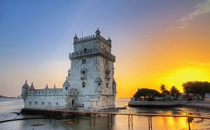

Lisboa

Introdução
|
Localização
|
Multimédia
|
Informações
|
Home
Informações
Website de Lisboa
Clica aqui para entrares na nossa cidade
Website do Turista
Clica aqui para conheceres a nossa cidade
População
10 Milhões
Sítios Históricos
Mosteiros dos Jerónimos
Torre de Belém